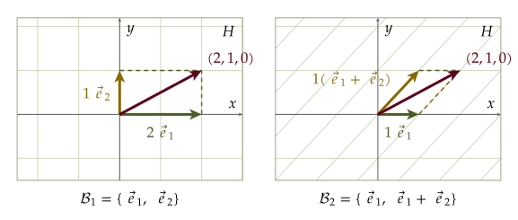

One vector, two bases
Predict: The vector (2, 1, 0) of the xy-plane is 2e₁ + 1e₂. Which multiples of e₁ and of e₁ + e₂ add up to the same vector?
The vector (x, y, 0)
Multiple of the first basis vector
Multiple of the second basis vector
First basis: e₁, e₂
Second basis: e₁, e₁ + e₂
Both pictures show the xy-plane H from above, with the same unit on both axes, and the same wine vector. The pale lines are the grid of each basis. Move the vector with the sliders, or drag the round handle at its tip.

How to read this figure
- The thin dark arrows are the two vectors of each basis. The olive arrow is a multiple of the first basis vector and the mustard arrow a multiple of the second; the dashed lines complete the parallelogram, whose far corner is the tip of the wine vector.
- In the first basis the weights are the entries themselves: (x, y, 0) = xe₁ + ye₂.
- In the second basis only e₁ + e₂ has a y-entry, so its weight must be y. That uses up y units in the x-direction as well, and e₁ supplies the remaining x − y: (x, y, 0) = (x − y)e₁ + y(e₁ + e₂).
- Each basis has its own grid. Counting grid steps along the two directions from the origin to the tip of the vector gives the two weights.
For which vectors of H are the two weights the same in both bases?